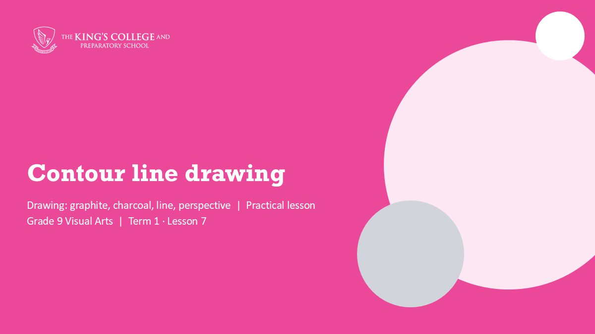

Term 1 · Lesson 7 · Practical lesson
Grid method 1: placement and proportion
Start here
Today I will
- Explain why artists use a grid
- Draw an accurate, light grid
- Transfer an outline square by square
Think first
Artists centuries ago used grids to copy and enlarge drawings for big paintings. Why might a grid help you draw more accurately?
Words to know
- Grid method
- Copying or enlarging an image accurately by drawing a grid over it and a matching grid on the paper.
- Proportion
- The size of parts compared to each other and to the whole.
- Placement
- Where each part sits on the page and inside each square.
- Reference image
- A photo or picture you look at for information while you draw.
- Scale
- Making the drawing bigger or smaller than the reference, by changing the grid size.
Slides

Notes
Why artists use grids; drawing an accurate grid; transferring a photo square by square.
How the grid method works
- Grid the reference: Equal squares over the photo (already done on your sheet).
- Grid the paper: The same number of squares; bigger squares make a bigger drawing.
- Number the squares: Letters across the top, numbers down the side, on both sheets.
- One square at a time: Copy only the lines inside one square, then move to the next.
Getting the grid right
- Use a 2H pencil: Light lines are easy to erase later.
- Measure, do not guess: Mark every 2 cm (or 3 cm to enlarge) along all four edges first.
- Join the marks: Hold the ruler firmly; check the squares are really square.
- Turn it upside down: Checking the drawing upside down shows mistakes in shape.
Remember
One square at a time: small shapes make an accurate whole.
Practical
You need: Ruler, 2H and HB pencils, eraser, gridded reference photo, A4 cartridge paper
Grid and outline transfer
- Measure and mark the grid on your paper with a 2H pencil.
- Join the marks lightly and label the squares (A, B, C… and 1, 2, 3…).
- Find a square with a clear shape, such as an eye, and start there.
- Copy the lines in each square, watching where they cross the edges of the square.
- Draw outlines and the edges of the main value shapes only; no shading yet.
- Write your name on the back and store the drawing flat for next week.
Test yourself
- Why does the grid method help with proportion?
- How do you make the drawing bigger than the photo?
- Why draw the grid with a 2H pencil?
Show answers
1. You copy small, simple shapes in the right place in each square, so the parts stay the right size. 2. Draw bigger squares on the paper (the same number of squares). 3. The lines are light, so they are easy to erase later.
Finished early?
Mini grid transfer
Practise the grid method on a small scale.
- Draw a 3 x 3 grid of 1 cm squares on a corner of your VJ page and draw a simple shape across it, such as a leaf or a cup.
- Next to it, draw a 3 x 3 grid of 2 cm squares with a light pencil.
- Label the squares A, B, C across and 1, 2, 3 down on both grids.
- Copy the shape one square at a time to make it twice as big.